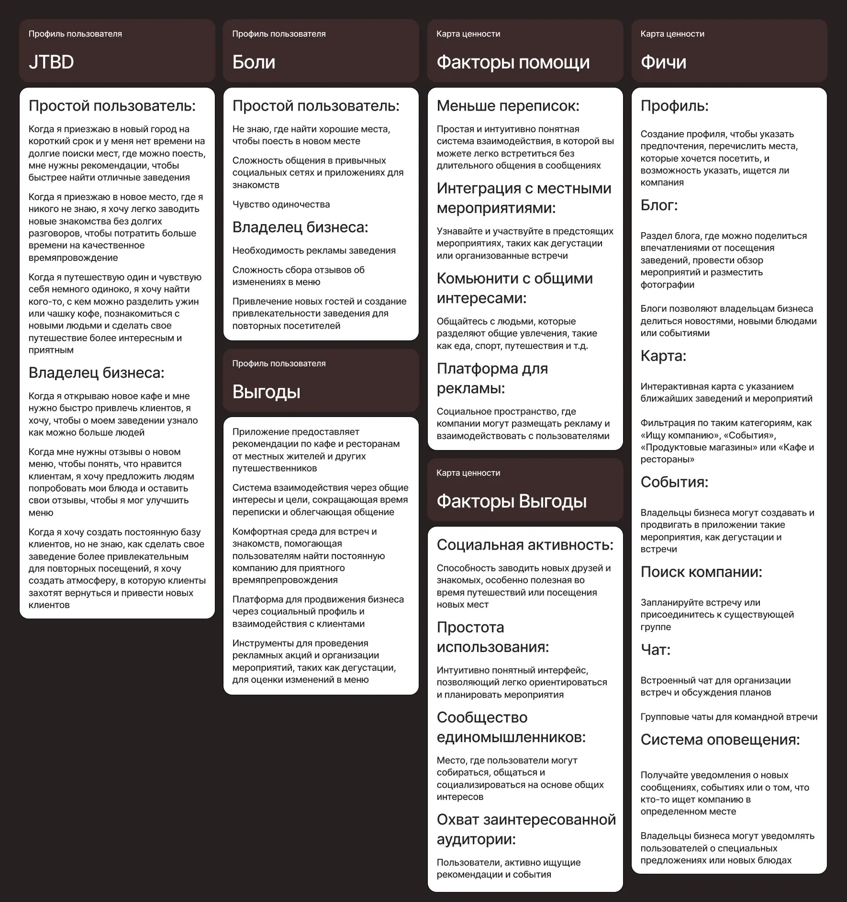

Идея проекта
Это приложение помогает решить две проблемы: Где встретить новых друзей? Где найти вкусную еду?
Приложение объединяет любителей гастрономии, давая им возможность найти новых друзей. Вместо того чтобы писать: «Привет, я хотел бы с тобой познакомиться. Можешь рассказать о себе?», вы можете написать: «Привет! Я тоже хотел бы посетить эту кофейню. Может сходим вместе?».
+ Кроме того, поскольку местом встречи являются местные заведения, приложение также ориентировано на владельцев бизнеса, предлагая возможности для рекламы и привлечения новых клиентов.


Исследование пользователя
Я хотела создать приложение, ориентированное на сообщество, которое объединит людей благодаря их общей любви к гастрономии. Для этого я проанализировала профили пользователей и вывела из этого необходимые фичи для приложения.

Концепция
Приключение в игровом формате с авантюристами, боссами и квестами.
Задачей было создать бренд, вызывающий атмосферу уютного приключения. Когда я думаю о гастрономическом путешествии, я представляю себе теплую, шумную таверну, куда заходит авантюрист после долгой дороги. Поэтому я решила взять концепцию игры и отразить ее в фирменном стиле.

Элементы айдентики
Шрифты поддерживают современный, минималистичный интерфейс, обеспечивая при этом отличную читаемость. Цветовая палитра сочетает в себе теплоту и дружелюбие с мягкими, привлекательными оттенками, а контрастные яркие элементы добавляют ощущение приключений.

Название и логотип имеют простую структуру. Логотип, как и название, состоит из двух слов, сочетание первых букв которых напоминает вид на дорогу сверху, которая с разных точек ведет к одному квесту.
Сами персонажи внешне похожи на героев игр-платформеров. Обычный пользователь изображен как авантюрист, а владелец бизнеса как игровой босс.


Путь пользователя
Я определила шаги пользователя и основные действия, которые он совершает на разных экранах приложения. Оказалось, что, несмотря на наличие двух типов пользователей, их пользовательский поток одинаков. Однако есть различия в использовании функций и их частоте.

Экраны приложения
Реализованный дизайн экранов в темной цветовой гамме, использующий цвета из айдентики бренда. Но в приложении есть и более привычные стандартные темная и светлая темы.


Лендинг
Цель лендинга — загрузка приложения пользователем. У меня также есть репозитарий на GitHub, где я тестировала адаптивность некоторых элементов макета для разных разрешений. Это не готовый сайт, а скорее платформа для тестирования того, как работают определенные дизайнерские решения.